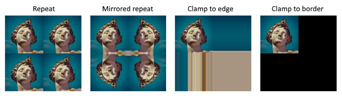

Sampler
A Sampler State is a low level object that encapsulates how a texture will be sampled in your application.
Creation
To create a sampler, first you need to create the SamplerStateDescription struct:
// Linear clamp sampler state
var samplerDescription = new SamplerStateDescription()
{
Filter = TextureFilter.MinLinear_MagLinear_MipLinear,
AddressU = TextureAddressMode.Clamp,
AddressV = TextureAddressMode.Clamp,
AddressW = TextureAddressMode.Clamp,
MinLOD = -1000, // DirectX -float.MaxValue | OpenGL -1000
MaxLOD = 1000, // DirectX float.MaxValue | OpenGL 1000
MipLODBias = 0f,
MaxAnisotropy = 1,
ComparisonFunc = ComparisonFunction.Never,
BorderColor = SamplerBorderColor.OpaqueWhite,
};
var samplerState = this.graphicsContext.Factory.CreateSamplerState(ref samplerDescription);
SamplerStateDescription
| Property | Type | Description |
|---|---|---|
| Filter | TextureFilter |
Filtering method to use when sampling a texture. |
| AddressU | TextureAddressMode |
Method to use for resolving a u texture coordinate that is outside the 0 to 1 range. |
| AddressV | TextureAddressMode |
Method to use for resolving a v texture coordinate that is outside the 0 to 1 range. |
| AddressW | TextureAddressMode |
Method to use for resolving a w texture coordinate that is outside the 0 to 1 range. |
| MipLODBias | float |
Offset from the calculated mipmap level. For example, if Direct3D calculates that a texture should be sampled at mipmap level 3 and MipLODBias is 2, then the texture will be sampled at mipmap level 5. |
| MaxAnisotropy | uint |
Clamping value used if D3D11_FILTER_ANISOTROPIC or D3D11_FILTER_COMPARISON_ANISOTROPIC is specified in Filter. Valid values are between 1 and 16. |
| ComparisonFunc | ComparisonFunction |
A function that compares sampled data against existing sampled data. |
| BorderColor | SamplerBorderColor |
Border color. |
| MinLOD | float |
Lower end of the mipmap range to clamp access to, where 0 is the largest and most detailed mipmap level and any level higher than that is less detailed. |
| MaxLOD | float |
Upper end of the mipmap range to clamp access to, where 0 is the largest and most detailed mipmap level and any level higher than that is less detailed. This value must be greater than or equal to MinLOD. |
TextureFilter
Defines texture filtering modes for a texture stage.

| Value | Description |
|---|---|
| MinPoint_MagPoint_MipPoint | Use point sampling for minification, magnification, and mip-level sampling. |
| MinPoint_MagPoint_MipLinear | Use point sampling for minification and magnification; use linear interpolation for mip-level sampling. |
| MinPoint_MagLinear_MipPoint | Use point sampling for minification; use linear interpolation for magnification; use point sampling for mip-level sampling. |
| MinPoint_MagLinear_MipLinear | Use point sampling for minification; use linear interpolation for magnification and mip-level sampling. |
| MinLinear_MagPoint_MipPoint | Use linear interpolation for minification; use point sampling for magnification and mip-level sampling. |
| MinLinear_MagPoint_MipLinear | Use linear interpolation for minification; use point sampling for magnification; use linear interpolation for mip-level sampling. |
| MinLinear_MagLinear_MipPoint | Use linear interpolation for minification and magnification; use point sampling for mip-level sampling. |
| MinLinear_MagLinear_MipLinear | Use linear interpolation for minification, magnification, and mip-level sampling. |
| Anisotropic | Use anisotropic interpolation for minification, magnification, and mip-level sampling. |
TextureAddressMode
Your application can assign texture coordinates to any vertex of any primitive. Typically, the u- and v-texture coordinates that you assign to a vertex are in the range of 0.0 to 1.0 inclusive. However, by assigning texture coordinates outside that range, you can create certain special texturing effects.
| Value | Description |
|---|---|
| Wrap | Tile the texture at every (u,v) integer junction. For example, for u values between 0 and 3, the texture is repeated three times. |
| Mirror | Flip the texture at every (u,v) integer junction. For u values between 0 and 1. |
| Clamp | Texture coordinates outside the range [0.0, 1.0] are set to the texture color at 0.0 or 1.0, respectively. |
| Border | Texture coordinates outside the range [0.0, 1.0] are set to the border color specified in SamplerStateDescription. |
| Mirror_One | Takes the absolute value of the texture coordinate (thus, mirroring around 0), and then clamps to the maximum value. |

MaxAnisotropy
Retrieves a value that indicates the maximum valid value for anisotropic filtering. Valid values are between 1 and 16.

Presets
To make the sampler construction easy, you can use Evergine.Common.SamplerStates to describe the most common sampler descriptions:
| Value |
|---|
| PointClamp |
| PointWrap |
| PointMirror |
| LinearClamp |
| LinearWrap |
| LinearMirror |
| AnisotropicClamp |
| AnisotropicWrap |
| AnisotropicMirror |
Default initialization
public void SetDefault()
{
this.Filter = TextureFilter.MinLinear_MagLinear_MipLinear;
this.AddressU = TextureAddressMode.Clamp;
this.AddressV = TextureAddressMode.Clamp;
this.AddressW = TextureAddressMode.Clamp;
this.MinLOD = -1000; // DirectX -float.MaxValue | OpenGL -1000
this.MaxLOD = 1000; // DirectX float.MaxValue | OpenGL 1000
this.MipLODBias = 0f;
this.MaxAnisotropy = 1;
this.ComparisonFunc = ComparisonFunction.Never;
this.BorderColor = SamplerBorderColor.OpaqueWhite;
}
Presets initialization
PointClamp = SamplerStateDescription.Default;
PointClamp.Filter = TextureFilter.MinPoint_MagPoint_MipPoint;
PointWrap = SamplerStateDescription.Default;
PointClamp.Filter = TextureFilter.MinPoint_MagPoint_MipPoint;
PointWrap.AddressU = TextureAddressMode.Wrap;
PointWrap.AddressV = TextureAddressMode.Wrap;
PointWrap.AddressW = TextureAddressMode.Wrap;
PointMirror = SamplerStateDescription.Default;
PointClamp.Filter = TextureFilter.MinPoint_MagPoint_MipPoint;
PointMirror.AddressU = TextureAddressMode.Mirror;
PointMirror.AddressV = TextureAddressMode.Mirror;
PointMirror.AddressW = TextureAddressMode.Mirror;
LinearClamp = SamplerStateDescription.Default;
LinearWrap = SamplerStateDescription.Default;
LinearWrap.AddressU = TextureAddressMode.Wrap;
LinearWrap.AddressV = TextureAddressMode.Wrap;
LinearWrap.AddressW = TextureAddressMode.Wrap;
LinearMirror = SamplerStateDescription.Default;
LinearMirror.AddressU = TextureAddressMode.Mirror;
LinearMirror.AddressV = TextureAddressMode.Mirror;
LinearMirror.AddressW = TextureAddressMode.Mirror;
AnisotropicClamp = SamplerStateDescription.Default;
AnisotropicClamp.Filter = TextureFilter.Anisotropic;
AnisotropicWrap = SamplerStateDescription.Default;
AnisotropicWrap.Filter = TextureFilter.Anisotropic;
AnisotropicWrap.AddressU = TextureAddressMode.Wrap;
AnisotropicWrap.AddressV = TextureAddressMode.Wrap;
AnisotropicWrap.AddressW = TextureAddressMode.Wrap;
AnisotropicMirror = SamplerStateDescription.Default;
AnisotropicMirror.Filter = TextureFilter.Anisotropic;
AnisotropicMirror.AddressU = TextureAddressMode.Mirror;
AnisotropicMirror.AddressV = TextureAddressMode.Mirror;
AnisotropicMirror.AddressW = TextureAddressMode.Mirror;